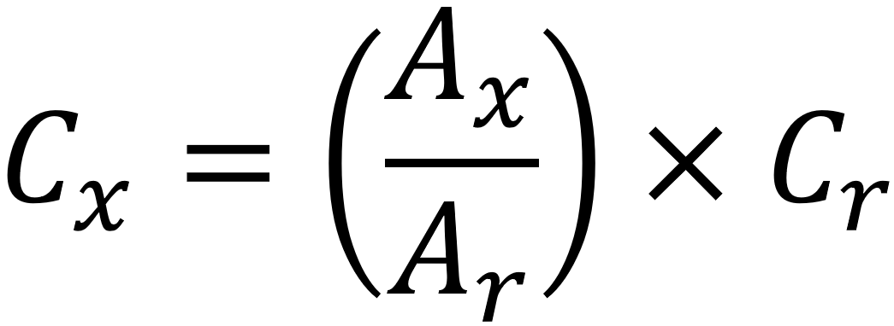
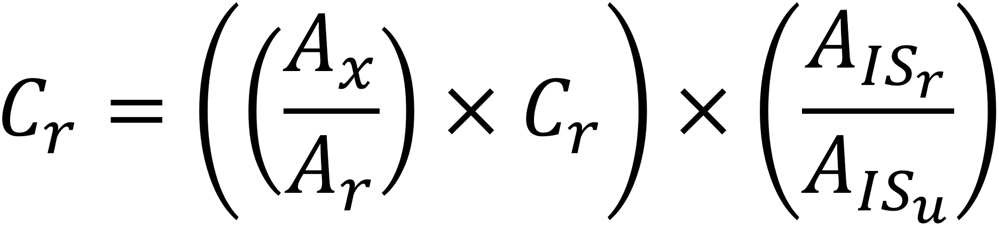

Quantitation and Reference Table Parameters
Overview
The following is a description of the most commonly used
Quantitation and
Reference table parameters.
Parameter Description
- Name – The name of a given analyte that is imported from the
quantitation/reference standard. When a peak in an unknown sample is consitered a match to a given quantitation/reference peak
it will be assigned the identification defined in the name field, this field is editable. (Required Field)
- Masses – Indicates which ion(s) will be
utilized for area and height calculations for each respective analyte. The initial values are
imported from the quant mass(es) of the quantitation/reference standard from within
their respective peak table, however they are editable. The “±” in the Masses column
represents the mass tolerance of that analyte. (Required Field)
- Absolute R.T. (s) – The elution time of a given analyte,
this infromation is imported from the quantitation/reference standard.
- R.T. Deviation (s) – During the peak finding portion of data
processing, ChromaTOF will search for a peak within the defined R.T. of the
unknown sample. The R.T. window is centered on the Absolute R.T. of the
quantitation/reference analyte. The size of the R.T. window is defined by the R.T. deviation.
The R.T. window is calculated using the following equation.
R.T. window = Absolute R.T. ± R.T. Deviation + R.T. Correction. (Required Field)
- R.T. Correction (s) – Over time if the same Quantitation/Reference method
is used it is not uncommon for peaks to shift, perhaps due a column change or front end maintenance. It may be tempting
for the user to deal with this problem by widening the R.T. Deviation; doing so is not recommending as it
increases the probability of false positivities. Rather than widening the R.T. window, it is recommended to shift
the R.T. window through the use of t he R.T. Correction parameter. A positive value for the R.T. correction will
shift the R.T. window to later eltion times and negative values will shift the R.T. window to earlier elution times.
(Optional Field)
- Match Threshold – An analyte’s match score quantifies the spectral
similarity between a given analyte and the corresponding quantitation/reference analyte. The match threshold
sets the minimum match value required to assign an identification to an unknown peak. A perfect match
would yield a score of 1000. (Required Field)
- S/N Threshold – The minimum signal to noise ratio required to
distinguish a given peak from the noise during the peaking finding portion of data processing.
(Required Field)
- Tolerance % (Reference Methods Only) – Defines the acceptable percent difference between the
area of the unknown sample peak with respect to the area of the reference peak. If a peak’s area is outside
of the allowable % difference, then that peak will be flagged as out of tolerance in the resulting peak table.
(Optional Field)
- Concentration (Reference Methods Only) – The known concentration of a given reference analyte in the
reference standard. If it is not known, leave the default value of 100.00 which will scale the calculated
concentration of the unknown peak as a percentage of the reference peak's area. The equation below shows how conentration is calculated when
and internal standard is not used.

If improved accuracy for concentration is neceessary, but a calibraion curve is not feasible, an interanl standard can be utilized. Below is the
equation used to calulate concentration when an internal standard is used.

Cx = Concentration of analyte x in the unknown sample.
Cr = Concentration of the corresponding analyte in the reference standard.
Ax = Area of analyte x in the unknown sample.
Ar = Area of the corresponding analyte in the reference standard.
AISu = Area of the corresponding internal standard in the unknown sample.
AISr = Area of the corresponding internal standard in the reference standard.
(Optional Field)
- Concentration - (Quantitation Methods Only) – The theoretical concentrations of each of the analytes and internal standards (if applicable)
must be defined. By scrolling to the far right columns of the Quantitation Table, columns with headers that match the names of each of the samples added to the quantitation method
will be visible. Each corresponding theoretical concentration should be entered in these cells. (Required Field)
- Type – Defines a given compound as either an analyte or an internal standard.
(Optional Field)
- Internal Standard – Correlates a given compound that has been defined as
an internal standard in the type column to a particular analyte. This field is used in conjunction with the
type parameter. (Optional Field)